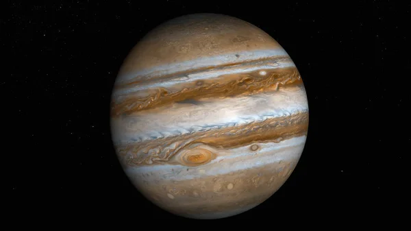

ดาวพฤหัสบดี (Jupiter)

เมื่อข้ามผ่านแถบดาวเคราะห์น้อยออกไป จะพบกับ ดาวพฤหัสบดี พี่ใหญ่ผู้เป็นดาวเคราะห์ที่มีมวลมากที่สุดในระบบสุริยะ โดยมีโครงสร้างเกือบทั้งหมดเป็นแก๊สไฮโดรเจนและฮีเลียม ไม่มีพื้นผิวที่เป็นของแข็ง ดาวพฤหัสบดีหมุนรอบตัวเองเร็วที่สุดในระบบสุริยะ โดยใช้เวลาเพียงประมาณ 10 ชั่วโมงต่อหนึ่งรอบ แรงหมุนอันมหาศาลนี้ทำให้เกิดแรงโคริออลิส (Coriolis Effect) ที่รุนแรง ขับเคลื่อนให้ชั้นบรรยากาศแยกออกเป็นแถบสีเข้มและจางเคลื่อนที่สวนทางกัน ปรากฏการณ์นี้เป็นต้นกำเนิดของพายุหมุนยักษ์ทำลายล้างมากมาย รวมถึงพายุ "จุดแดงใหญ่" (Great Red Spot) ซึ่งเป็นพายุที่มีขนาดใหญ่กว่าโลกและหมุนต่อเนื่องมานานหลายร้อยปี ข้อมูลล่าสุดจากยานจูโน (Juno) ยังเผยให้เห็นว่ารากของพายุนี้หยั่งลึกลงไปใต้ชั้นเมฆหลายร้อยกิโลเมตร และดาวดวงนี้ยังมีสนามแม่เหล็กที่ทรงพลังกว่าโลกถึง 14 เท่า